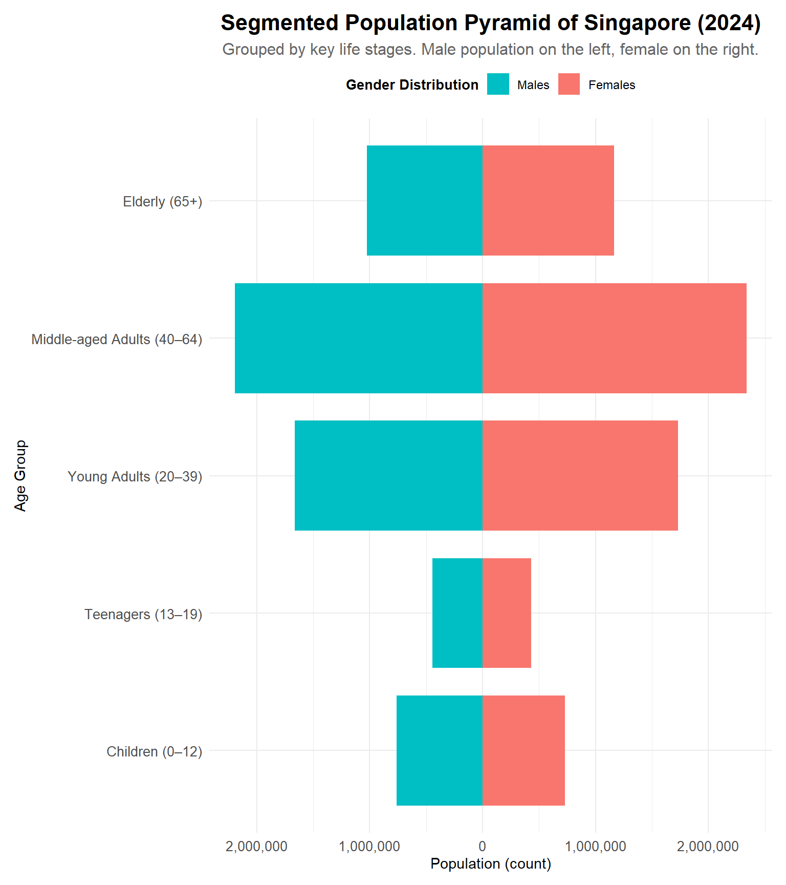
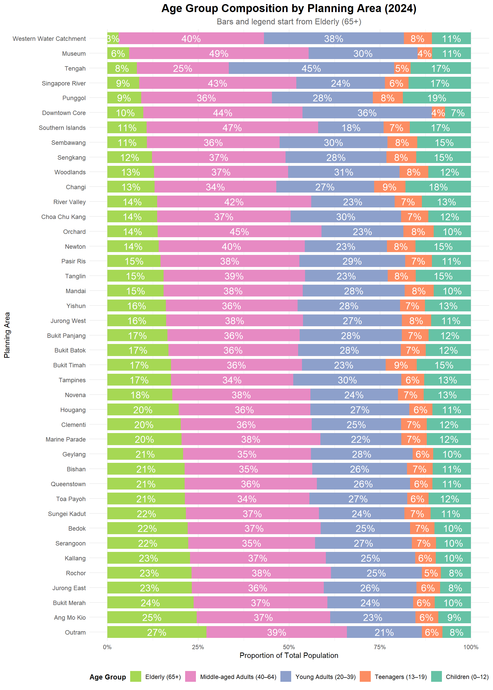

pacman::p_load(tidyverse, readxl, haven, ggrepel,
ggthemes, patchwork, ggridges, ggdist, scales, plotly,
gganimate, gifski, gapminder)Take-Home_Ex01
Editorial Brief – Visualising Singapore’s Resident Population (2024)
As the graphical editor of a media company, I have been tasked to design up to three impactful data visualisations to support an article on Singapore’s resident population as of June 2024.
The aim is to help readers quickly understand demographic trends using clear and accessible visuals based on official statistics.
Data Source
Department of Statistics Singapore (DOS): Planning Area and Subzone, Single Year of Age (0–100+), Sex (Male, Female, Total), Resident Population counts (as of June 2024)
Visualisation Objectives
- Relevance: Support editorial narratives (e.g. ageing population, regional differences)
- Clarity: Easy for general readers to understand
- Compactness: Limited to a maximum of three charts
Data Preparation Summary
- Cleaned and filtered for relevant fields (Age, Sex, Planning Area)
- Converted columns to numeric where needed (e.g. Age, Population)
- Aggregated by region and demographic groups for visual storytelling
Data Cleaning Summary
To prepare the dataset for visualisation, the following data cleaning steps were applied:
Skipped Metadata Rows
The original Excel file contained header and metadata rows. We usedskiprows = 2to access only the actual data records.Dropped Incomplete Rows
Removed rows where any key fields were missing:SubzoneAgeSexPopulation (2024)
This ensures only valid, complete records are included in the analysis.
Renamed Columns for Clarity
Replaced generic or auto-generated column names (e.g.,Unnamed: x,2024) with:Planning Area,Subzone,Age,Sex,Population
Converted to Numeric Types
Converted theAgeandPopulationcolumns to numeric using coercion.
Non-numeric values were turned intoNAand filtered out.Removed Rows with Missing Age or Population
Any rows with missing (NA) values inAgeorPopulationwere dropped after conversion.
Data Parameters and Description
| Field Name | Field Description |
|---|---|
| Planning Area | Administrative regions in Singapore (e.g. Bedok, Ang Mo Kio, Tampines, etc.) |
| Subzone | Subdivisions within each Planning Area |
| Age | Age of residents in single years (0 to 100+) |
| Sex | Gender category: Male, Female, or Total |
| Population | Number of residents for the given demographic group in June 2024 |
Load packages
We begin by loading all required R packages using the pacman::p_load() function. These packages support data wrangling, visualisation, animation, and layout composition for this take-home exercise.
- tidyverse: Core set of packages for data manipulation, transformation, and visualisation using
ggplot2. - readxl: To import Excel files (
.xlsx), such as the population dataset used in this exercise. - haven: Enables importing datasets from software like SPSS, SAS, and Stata.
- ggrepel: Prevents overlapping text labels in
ggplot2plots, improving readability. - ggthemes: Provides additional
ggplot2themes for publication-quality charts. - patchwork: Combines multiple
ggplot2plots into a single composite layout. - ggridges: Creates ridgeline plots to visualise distributions across categories.
- ggdist: Supports visualisations of distributions and uncertainty (e.g. dot + interval plots).
- scales: Useful for formatting axis labels (e.g. commas, percentages, date breaks).
- plotly: Adds interactivity to static plots made with
ggplot2, enabling zoom, hover, etc. - gganimate: Enables animation of
ggplot2plots across time or other variables. - gifski: Required by
gganimateto render animations into GIF format. - gapminder: A sample dataset often used for animated population plots and trend visualisation.
Import Data
pop_data <- read_csv("TH01/data/cleaned_population_2024.csv")EDA 1: Population Pyramid (Age-Sex Distribution)
pyramid_data <- pop_data %>%
filter(Sex %in% c("Males", "Females")) %>%
mutate(Population = ifelse(Sex == "Males", -Population, Population))
ggplot(pyramid_data, aes(x = Age, y = Population, fill = Sex)) +
geom_bar(stat = "identity", width = 0.9) +
coord_flip() + scale_x_continuous(limits = c(0, 100)) +
scale_y_continuous(labels = function(x) comma(abs(x))) +
scale_fill_manual(
values = c("Males" = "#00bfc4", "Females" = "#f8766d"),
breaks = c("Males", "Females"),
labels = c("Males", "Females")
) +
labs(
title = "Population Pyramid of Singapore (2024)",
subtitle = "Male population is shown on the left, female on the right",
x = "Age",
y = "Population (count)",
fill = "Gender Distribution"
) +
theme_minimal(base_family = "Helvetica") +
theme(
plot.title = element_text(size = 16, face = "bold", hjust = 0.5),
plot.subtitle = element_text(size = 12, hjust = 0.5,color = "grey40"),
axis.text = element_text(size = 10),
axis.title = element_text(size = 11),
legend.position = "top",
legend.title = element_text(size = 10, face = "bold"),
legend.text = element_text(size = 9),
plot.margin = margin(10, 10, 10, 10)
)
pyramid_data <- pop_data %>%
filter(Sex %in% c("Males", "Females")) %>%
mutate(
Population = ifelse(Sex == "Males", -Population, Population),
Age_Group = case_when(
Age >= 0 & Age <= 12 ~ "Children (0–12)",
Age >= 13 & Age <= 19 ~ "Teenagers (13–19)",
Age >= 20 & Age <= 39 ~ "Young Adults (20–39)",
Age >= 40 & Age <= 64 ~ "Middle-aged Adults (40–64)",
Age >= 65 ~ "Elderly (65+)"
),
Age_Group = factor(
Age_Group,
levels = c(
"Children (0–12)",
"Teenagers (13–19)",
"Young Adults (20–39)",
"Middle-aged Adults (40–64)",
"Elderly (65+)"
)
)
)
ggplot(pyramid_data, aes(x = Age_Group, y = Population, fill = Sex)) +
geom_bar(stat = "identity", position = "stack", width = 0.8) +
coord_flip() +
scale_y_continuous(labels = function(x) comma(abs(x))) +
scale_fill_manual(
values = c("Males" = "#00bfc4", "Females" = "#f8766d"),
breaks = c("Males", "Females"),
labels = c("Males", "Females")
) +
labs(
title = "Segmented Population Pyramid of Singapore (2024)",
subtitle = "Grouped by key life stages. Male population on the left, female on the right.",
x = "Age Group",
y = "Population (count)",
fill = "Gender Distribution"
) +
theme_minimal(base_family = "Helvetica") +
theme(
plot.title = element_text(size = 16, face = "bold", hjust = 0.5),
plot.subtitle = element_text(size = 12, hjust = 0.5,color = "grey40"),
axis.text = element_text(size = 10),
axis.title = element_text(size = 11),
legend.position = "top",
legend.title = element_text(size = 10, face = "bold"),
legend.text = element_text(size = 9),
plot.margin = margin(10, 10, 10, 10)
)
EDA 1 Insights
The following insights were derived from two visualizations:
1. A population pyramid by individual age
2. A segmented pyramid grouped by age stages
Balanced Gender Counts in Ages 0–19
- Both the individual and grouped charts show that male and female populations are nearly equal from age 0 to 19
- This includes the “Children (0–12)” and “Teenagers (13–19)” segments
- The bars are symmetrical for both sexes, indicating no gender disparity in the younger cohorts
Largest Population in Middle-aged Adults (40–64)
- The “Middle-aged Adults (40–64)” age group is the most populous, with the widest stacked bar
- This observation holds true in both visualizations
Greater Female Presence in Elderly (65+)
- In the individual age plot, females outnumber males starting around age 70
- The difference becomes increasingly prominent in the 80 to 100+ range
- This is reinforced in the grouped pyramid where the “Elderly (65+)” bar is longer for females
Smaller Cohorts in Youth (Ages 0–19)
- The “Children (0–12)” and “Teenagers (13–19)” groups have the shortest bars
- This reflects a shrinking young population, as seen in the narrow base of the age-specific pyramid
EDA 2: Top 10 Planning Areas by Total Population and Elderly Population (Age 65+)
top_total <- pop_data %>%
filter(Sex == "Total") %>%
group_by(`Planning Area`) %>%
summarise(TotalPopulation = sum(Population, na.rm = TRUE)) %>%
arrange(desc(TotalPopulation)) %>%
slice_max(TotalPopulation, n = 10)
plot_total <- ggplot(top_total, aes(x = reorder(`Planning Area`, TotalPopulation), y = TotalPopulation)) +
geom_col(fill = "#2b8cbe") +
geom_text(aes(label = scales::comma(TotalPopulation)), hjust = -0.1, size = 3) +
coord_flip() +
scale_y_continuous(labels = label_comma(), expand = expansion(mult = c(0, 0.1))) +
labs(title = "Top 10 Planning Areas by Total Population") +
theme_minimal(base_family = "Helvetica") +
theme(
plot.title = element_text(face = "bold", size = 14),
axis.title = element_blank(),
panel.grid.major.y = element_blank()
)
# Top 10 by Elderly (Age 65+)
top_elderly <- pop_data %>%
filter(Sex == "Total", Age >= 65) %>%
group_by(`Planning Area`) %>%
summarise(ElderlyPopulation = sum(Population, na.rm = TRUE)) %>%
arrange(desc(ElderlyPopulation)) %>%
slice_max(ElderlyPopulation, n = 10)
plot_elderly <- ggplot(top_elderly, aes(x = reorder(`Planning Area`, ElderlyPopulation), y = ElderlyPopulation)) +
geom_col(fill = "#e34a33") +
geom_text(aes(label = scales::comma(ElderlyPopulation)), hjust = -0.1, size = 3) +
coord_flip() +
scale_y_continuous(labels = label_comma(), expand = expansion(mult = c(0, 0.1))) +
labs(title = "Top 10 Planning Areas by Elderly Population (65+)") +
theme_minimal(base_family = "Helvetica") +
theme(
plot.title = element_text(face = "bold", size = 14),
axis.title = element_blank(),
panel.grid.major.y = element_blank()
)
plot_total / plot_elderly +
plot_annotation(title = "Comparison of Population Distribution by Planning Area (2024)",
theme = theme(plot.title = element_text(size = 16, face = "bold", hjust = 0.5)))EDA 2 Insights
Bedok, Tampines, and Jurong West Appear in Both Rankings
These three planning areas rank in the top 10 for both total population and elderly population (65+), indicating they are high-density towns with large absolute numbers of seniors.Central Area Ranks High in Total Population but Not in Elderly Count
While the Central Area appears in the total population chart, it is absent from the elderly chart, suggesting a lower proportion of elderly residents — possibly due to its mixed commercial-residential nature.Ang Mo Kio and Bukit Merah Appear Only in the Elderly Ranking
These areas do not rank among the top 10 in total population but have high elderly counts, implying a relatively older resident base compared to newer towns.Woodlands and Sengkang Rank High in Total but Not Elderly Population
These towns appear in the total population top 10 but are absent in the elderly top 10, indicating a younger demographic composition.Elderly Population Distribution is More Uniform
Compared to the total population, the elderly population values are closer in range, suggesting a more even spread of seniors across the top-ranked areas.
EDA 3 : Age Group Composition by Planning Area
age_levels <- c("Elderly (65+)", "Middle-aged Adults (40–64)",
"Young Adults (20–39)", "Teenagers (13–19)",
"Children (0–12)")
age_colors <- c(
"Elderly (65+)" = "#a6d854",
"Middle-aged Adults (40–64)" = "#e78ac3",
"Young Adults (20–39)" = "#8da0cb",
"Teenagers (13–19)" = "#fc8d62",
"Children (0–12)" = "#66c2a5"
)
pop_grouped <- pop_data %>%
filter(Sex == "Total") %>%
mutate(
Age_Group = case_when(
Age >= 0 & Age <= 12 ~ "Children (0–12)",
Age >= 13 & Age <= 19 ~ "Teenagers (13–19)",
Age >= 20 & Age <= 39 ~ "Young Adults (20–39)",
Age >= 40 & Age <= 64 ~ "Middle-aged Adults (40–64)",
Age >= 65 ~ "Elderly (65+)"
)
) %>%
filter(!is.na(Age_Group)) %>%
group_by(`Planning Area`, Age_Group) %>%
summarise(Population = sum(Population), .groups = "drop")
pop_percent <- pop_grouped %>%
mutate(`Planning Area` = trimws(`Planning Area`)) %>%
filter(
!is.na(`Planning Area`),
`Planning Area` != "",
`Planning Area` != "NA",
`Planning Area` != "Total"
) %>%
group_by(`Planning Area`) %>%
mutate(
Total = sum(Population),
Share = Population / Total
) %>%
ungroup()
if("NA" %in% pop_percent$`Planning Area`) {
print("Warning: 'NA' string still found in Planning Area")
}
ordering <- pop_percent %>%
filter(Age_Group == "Elderly (65+)") %>%
arrange(desc(Share)) %>%
pull(`Planning Area`)
ordering <- ordering[!is.na(ordering) & ordering != "NA"]
pop_percent$`Planning Area` <- factor(pop_percent$`Planning Area`, levels = ordering)
pop_percent$Age_Group <- factor(pop_percent$Age_Group, levels = rev(age_levels))
pop_percent <- pop_percent %>%
filter(`Planning Area` != "NA" & !is.na(`Planning Area`))
ggplot(pop_percent, aes(x = `Planning Area`, y = Share, fill = Age_Group)) +
geom_col(width = 0.8) +
geom_text(
aes(label = percent(Share, accuracy = 1)),
position = position_stack(vjust = 0.5),
size = 5,
color = "white"
) +
scale_y_continuous(labels = percent_format(accuracy = 1)) +
scale_fill_manual(values = age_colors, breaks = age_levels) +
coord_flip() +
labs(
title = "Age Group Composition by Planning Area (2024)",
subtitle = "Bars and legend start from Elderly (65+)",
x = "Planning Area",
y = "Proportion of Total Population",
fill = "Age Group"
) +
theme_minimal(base_family = "Helvetica") +
theme(
plot.title = element_text(face = "bold", size = 16, hjust = 0.5),
plot.subtitle = element_text(size = 12, hjust = 0.5, color = "grey40"),
legend.position = "bottom",
legend.title = element_text(size = 10, face = "bold"),
legend.text = element_text(size = 9),
axis.text = element_text(size = 9)
)
EDA 3 Insights
Higher Elderly Proportions
Planning areas such as Outram, Bukit Merah, and Ang Mo Kio have visibly higher proportions of residents aged 65 and above.Younger Population Profiles
Areas like Punggol, Sembawang, and Tengah show larger proportions of Children (0–12) and Young Adults (20–39), with smaller Elderly segments.Middle-aged Adults Dominate Most Areas
The 40–64 age group forms the largest proportion in most planning areas, indicating a dominant working-age population.“Total” Row Reflects National Age Structure
The bar labeled “Total” reflects the overall distribution of age groups across all planning areas and serves as a baseline for comparison.Smaller Young Dependent Segments
In most planning areas, Children and Teenagers together constitute less than 25% of the population.Balanced Age Distribution in Selected Areas
Some areas such as Jurong West and Woodlands display relatively balanced proportions across all five age groups.